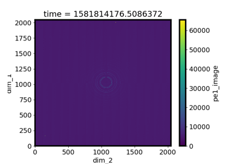

Advanced Users Documents¶
If you are familiar with event_model architecture data and databroker and you would like to process such data, below are the documents for you.
The example data is packed in a python package dbexample.
Install the package before you run the notebooks or scripts:
python -m pip install dbexample
